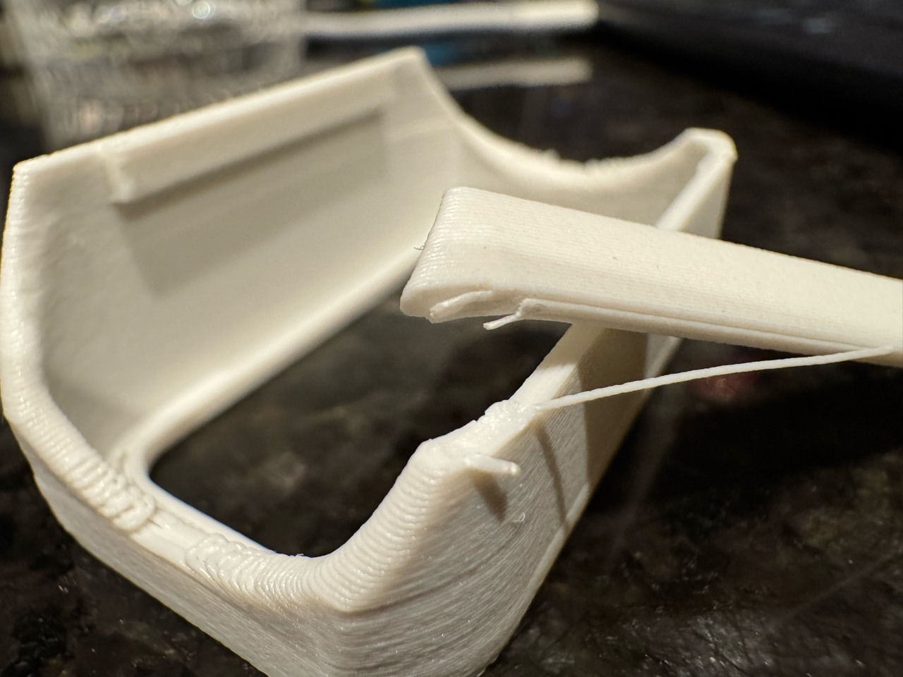

PET-GF
Cooling follows the toolpath
Use the shared Fiberon PET-GF15 project and the named part’s recipe. The part determines where it needs extra cooling.
| Left nozzle | {{petgf:/nozzle_diameter/0}} mm |
|---|---|
| First / ordinary layers | {{petgf:/initial_layer_print_height}} / {{petgf:/layer_height}} mm |
| Nozzle, first / ordinary | {{petgf:/nozzle_temperature_initial_layer/0}} / {{petgf:/nozzle_temperature/0}} °C |
| Textured PEI bed | {{petgf:/textured_plate_temp/0}} °C |
| Walls / gyroid | {{petgf:/wall_loops}} / {{petgf:/sparse_infill_density}} |
| Infill / wall overlap | {{petgf:/infill_wall_overlap}} |
| Ordinary / auxiliary fan | {{petgf:/fan_max_speed/0}}% / {{petgf:/additional_cooling_fan_speed/0}}% |
| Overhang trigger / fan | {{petgf:/overhang_fan_threshold/0}} / {{petgf:/overhang_fan_speed/0}}% |
| Initial fan-off courses | {{petgf:/close_fan_the_first_x_layers/0}} |

Cool the span and its footing
Ordinary and auxiliary cooling stay off. The project adds part fan for bridges and qualifying overhangs. The output stage retains that fan on fresh courses over the cooled footprint and caps deposition there at bridge speed.
Give a small hot tip time
Use the production batch when comparing small parts. Check the time before the nozzle returns to the same area. Where a recipe qualifies a separate tower, use its placement and retained time between visits.
Full project · Cooling and recovery policy · Cover fracture report · Fan-off cover evidence